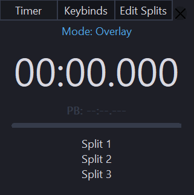

Split 12x
A simple and elegant split timer for speedrunners and focused tasks.
DownloadLoading download count...
Includes executable and configuration files. Windows only.

A simple and elegant split timer for speedrunners and focused tasks.
DownloadLoading download count...
Includes executable and configuration files. Windows only.
